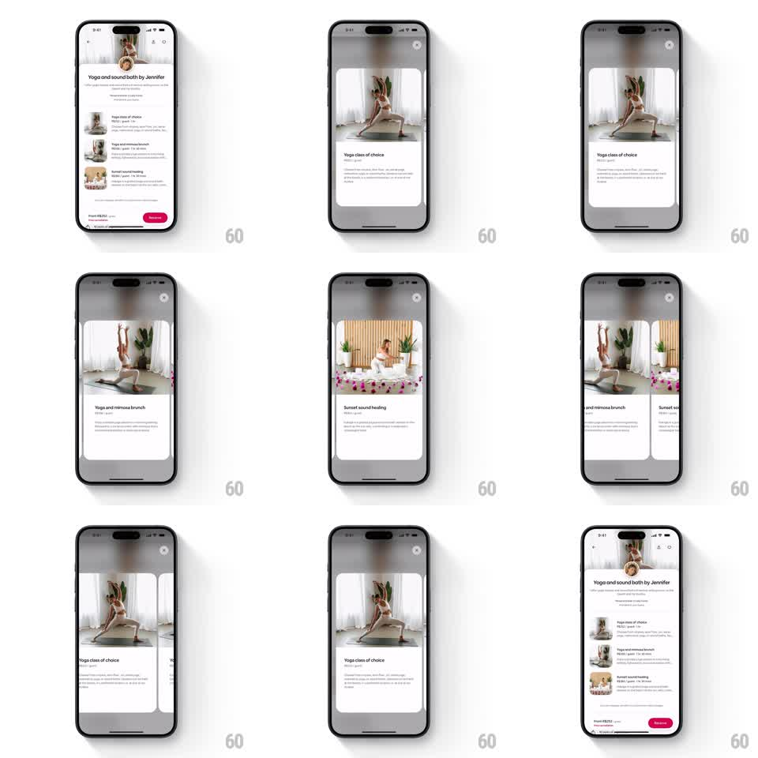

Media
Frame-by-frame

Rebuild this interaction 1:1: Airbnb's experience card morph - on the "Yoga and sound bath by Jennifer" screen, tapping a class card expands it into a full-width immersive card, then into a horizontal paged carousel of class cards with photos and details, and closing shrinks it seamlessly back into the list.

Rebuild this interaction 1:1: Airbnb's experience card morph - on the "Yoga and sound bath by Jennifer" screen, tapping a class card expands it into a full-width immersive card, then into a horizontal paged carousel of class cards with photos and details, and closing shrinks it seamlessly back into the list.
## Integration
Integration: stack-agnostic spec - springs given as stiffness/damping, timed motions as duration + curve; map every value to your framework and animation library of choice.
## Scene
White experience screen ("Yoga and sound bath by Jennifer") listing class cards (Yoga class of choice, Yoga and mimosa brunch, Sunset sound healing) with a pink Reserve button. Expanded state: one class card fills the width with a large photo (yoga poses, sound bath with singing bowls), title, duration, price, and description, with a close X top-right. Carousel state: cards page horizontally, adjacent cards peeking in at the edges.
## Motion spec
Pattern: inline card to immersive carousel morph (shared element).
- Tap a card: the list dims and the tapped card expands in place - its photo grows from thumbnail to full-width hero (350ms ease-in-out), title and details reflow below it, and a close X fades in top-right.
- Drag horizontally: the expanded card becomes a carousel - the current card slides with the finger 1:1, neighbors peek in from the edges (scale 0.95, dimmed 20%).
- Release: the carousel snaps to the nearest card (spring ~300/22); the new card's content fades in (200ms).
- Tap X: the current card shrinks back into its original list position (350ms ease-in-out), sibling rows fading back in as it docks.
## Calibration
- The photo is the shared element through every state - it never cuts or crossfades.
- Peek width on adjacent cards stays constant (~24pt) regardless of drag distance.
## Reduced motion
Card content crossfades between list and expanded states (250ms); carousel changes pages with a fade.
## Don't miss
- The close X and the Reserve button trade places between states - never both visible mid-morph.
- The list behind the expanded card stays faintly visible at the top edge (blurred), grounding the morph.